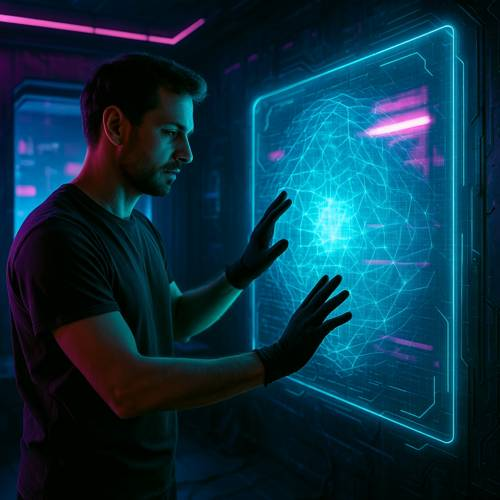
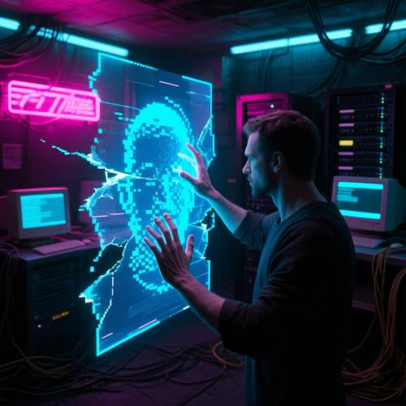

Style — Please generate a picture of a man touching an unstable holographic pr
Please generate a picture of a man touching an unstable holographic projection with his hands without sensing gloves in a cyberpunk-style room.

Direct — one call, no iteration

Continuum — Kimi K3 + Qwen-Image
Judge — Direct
PASSStyle — The image is set in a dark room illuminated by blue and pink neon lights. There is a large, glowing blue holographic screen. This aesthetic, with its dark, high-tech environment and neon glow, is consistent with the cyberpunk style.
FAILAction - Hand (Character/Anthropomorphic) — A man is shown with both of his hands raised towards a glowing blue holographic projection. His fingers are spread, but they are not physically making contact with the surface of the projection; they are held slightly away from it.
PASSCompound - Imagination — The image depicts a man interacting with a glowing blue, semi-transparent screen that appears to be a holographic projection, a concept from science fiction.
FAILGrammar - Negation — The man in the image is wearing black gloves that cover both of his hands and wrists, which contradicts the prompt's requirement for him to be 'without sensing gloves'.
Judge — Continuum
PASSStyle — The image is set in a room with a distinct cyberpunk aesthetic, characterized by dark surroundings illuminated by bright neon lights in pink and cyan. The room contains racks of computer servers, older-looking monitors, and a tangle of exposed wires on the floor and ceiling, contributing to a high-tech, cluttered feel.
PASSAction - Hand (Character/Anthropomorphic) — A man is depicted in profile, raising both of his hands towards a holographic projection. His hands are anatomically well-formed, with five fingers each. His right hand appears to be making direct contact with the surface of the hologram, while his left hand is held slightly away from it.
PASSCompound - Imagination — The image portrays a fantastical scene where a man is physically interacting with a large, glowing blue, pixelated holographic projection. The hologram appears unstable, with fractured and glitching edges, and the man's touch seems to affect its surface, which is an impossible action in reality.
PASSGrammar - Negation — The man's hands are completely bare. There are no gloves, sensing devices, or any other coverings on his hands or wrists, which directly adheres to the negative constraint in the prompt.
What the agent did
Thinking
The user wants a picture of a man touching an unstable holographic projection with his hands (no sensing gloves) in a cyberpunk-style room. Key elements: 1. A man 2. Touching a holographic projection with his bare hands (emphasize no gloves — bare hands) 3. The holographic projection is unstable (flickering, glitching, distortion effects) 4. Cyberpunk-style room (neon lights, dark, high-tech, etc.) I need to use qwen-image model for generation per the benchmark policy. Let me generate the image first. Let me craft a detailed visual prompt: - A man in a cyberpunk room reaching out with bare hands touching a flickering, glitching holographic projection - Hologram: cyan/blue with glitch artifacts, scan lines, fragmenting pixels, distortion - Room: neon signs, dark moody atmosphere, tech equipment, cables, screens, purple/pink/cyan neon lighting - Man: maybe wearing a tech jacket, visible bare hands clearly without gloves Let me generate.
Step 1 — `generate_image`
{
"prompt": "A man in a dark cyberpunk-style room reaching out and touching a large unstable holographic projection with his bare hands, no gloves, fingertips passing through flickering glitching hologram of blue-cyan light. The hologram distorts and fragments where his hands touch it \u2014 scan lines, pixelated glitch artifacts, static noise, torn edges of light. The room is filled with neon signs in magenta and cyan, glowing computer monitors, tangled cables, server racks, dark shadows with high contrast lighting. Cinematic moody atmosphere, volumetric light from the hologram illuminating the man's face and bare fingers, photorealistic, detailed.",
"model": "qwen-image"
}
Result img_0
Thinking
Let me examine the image. The first generation shows: - A man in a cyberpunk room ✓ - He's reaching out with both bare hands toward a holographic projection ✓ - The hologram is glitching/unstable with pixelated fragments, torn edges, scan lines ✓ - Cyberpunk room with neon signs, monitors, cables, server racks ✓ - Bare hands clearly visible without gloves ✓ The composition looks quite good. The hologram appears to be a glitching humanoid figure with instability effects. The man's hands are touching/near the hologram. Let me check details more carefully. The hands — do they look correct? Let me inspect the hand regions since hands are often problematic. Also check whether the hands are clearly touching the hologram. Let me inspect the hands region to check for artifacts.
Model
The first generation looks promising — a man with bare hands reaching into a flickering, glitching hologram in a neon cyberpunk room. Let me inspect the hands closely, since hands are a common failure point and they're central to this prompt.
Inspecting the hands: both hands look anatomically correct — five fingers each, natural spread, clearly bare (no gloves), and they're touching/pressed against the hologram surface. The hologram has a nice glitchy, unstable look with pixelation and fragmented edges where the hands touch it. Let me also check the rest of the image — the man's face and the neon sign. The neon sign had some text-like glyphs. The prompt doesn't ask for specific text, so it's not a requirement, but let me make sure nothing looks broken. Let me check the face and overall. Actually, let me inspect the neon sign and face region quickly.
Model
The hands look great — anatomically correct, clearly bare, fingers spread against the hologram with glitch distortion around the contact points. Let me check the man's face and the neon signage region.
The face looks natural, the hologram has a strong unstable/glitching appearance — pixelated fragments, torn edges, scan lines. The neon sign has pseudo-text glyphs which is fine (the prompt didn't request specific text). The man's hand is touching the hologram surface with visible distortion at contact. Everything the prompt asks for is present: 1. ✓ A man 2. ✓ Touching a holographic projection with his hands 3. ✓ Bare hands (no sensing gloves) — clearly visible bare skin on both hands 4. ✓ Unstable hologram — glitching, pixelated, fragmenting, scan lines 5. ✓ Cyberpunk-style room — neon signs, CRT monitors, server racks, cables, magenta/cyan lighting This is a good result. I should mark it as best and stop. The image satisfies all requirements. Good enough is a stop condition — no need to over-edit.
Step 4 — `mark_best`
{
"image": "img_0",
"reason": "All prompt requirements satisfied: man touching an unstable glitching hologram with clearly bare hands in a neon cyberpunk room; hands and face verified artifact-free at full resolution."
}
Thinking
The image is marked as best. I'm done. Let me summarize for the user.
Model
Done! The image shows exactly what you asked for: - **The man** — standing in profile, both hands raised and pressed into the hologram's surface - **Bare hands, no gloves** — fingers clearly ungloved, spread against the projection, with the hologram's cyan light playing across his skin - **Unstable holographic projection** — a humanoid figure of light that visibly glitches: pixelated fragmentation, torn flickering edges, and scan-line distortion, especially where his fingers make contact - **Cyberpunk room** — magenta and cyan neon signage, old CRT monitors, server racks, and tangled cables in a dark, high-contrast space I verified the hands and face at full resolution — the anatomy is clean and the glitch effects read well. The image is marked as the final result.